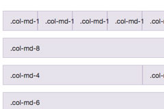
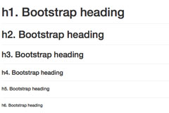
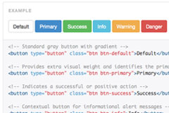
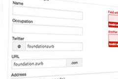

The SLICK. documentation
Welcome to the Documentation of "SLICK.", a grid based responsive HTML5/CSS3 template
Template Version 1.0 | Doc Version 1.0
Important: The Template itself should work right from your desktop without problems. But some scripts use external sources so a internet connection can be necessary for some functions to work properly. And the contact form script is PHP based and will work from a PHP ready webspace/Server only! So it is not a bug if the contact form did not work locally...
The Installation
Nothing easier that that: Extract the zip archive and upload the template files to your server.
Step 1: Extracting
After downloading the zip package from themeforest.net it is important to extract it to your local HDD. You will find some folders in it (including this doc folder;-). One is called "/the_template_itself". That folder includes all template files. Or with other words, thats your new website. To extract the zip file use a tool like WinZip for for MacOSX the build in unzipping function. In most cases just double click on the file to extract it to your HDD.
Step 2: Uploading
Now upload the files from this directory (not the directory itself!) to your webspace using a FTP tool. There are a lot of good and free FTP tools out there, hard to suggest one. And I´am sure 99% of themeforest.net customers already have a favorite. But if not: One tool I can recommend is FileZilla. It is available for all platforms and its source is open. You can get it here! Connect to your server/webspace with your preferred FTP tool, upload the files and you are…

Step 3: Ready
…done! Tatatata!
The Framework
This template based on the truly amazing responsive grid framework Bootstrap, version 3.0. This framework offers some great and easy tools to develop good looking and rock solid websites rapidly, ready for all kinds of devices (huge desktops to tiny mobile screens). Below you find the links to the important aspects and usages of the Bootstrap documents:
The Grid
Bootstrap includes a responsive, mobile first fluid grid system that appropriately scales up to 12 columns as the device or viewport size increases.
Read more
Typography
Create powerful multi-device layouts quickly and easily with the 12-column, nestable Bootstrap 3 grid. If you're familiar with grid systems, you'll feel right at home.
Read more
Buttons
Buttons are a convenient tool when it comes to more traditional actions. To that end, Bootstrap includes a lot of easy to use button styles that you can customize or override.
Read more
Forms
Individual form controls automatically receive some global styling. More can be seen here:
Read more
The Slider
The template comes with a build in slider script with a lot of options and functions. All template files will automatically call the script. The only thing you have to do is to add your sliding content and add, if wanted, some additionally options.
Important: If you use the templates default index.html file you don´t need to setup the slider. In this case everything is done and the slider is already working. The following description is just for the case you want to integrate the slider on antoher place or a subpage etc.
-
As written above any HTML page of the IncredibleBox template loads the correct script already. So if you want to use the script with one of the default pages skip this step and head over to step 2. But if you start with a blank and empty page or if you want to remove the script call add/remove this line of code from the templates <head></head> code:
<!-- The Slider and Carousel Script--> <script src="javascripts/flexslider.min.js"></script> -
Now you have to add HTML content item (images, text, videos etc.) which should be used to slide from item to item.
For example add this code somewhere into your HTML documents <body></body> area:
<!-- Place somewhere in the <body> of your page -->
<div class="flexslider">
<ul class="slides">
<li>
<img src="slide1.jpg" />
</li>
<li>
<img src="slide2.jpg" />
</li>
<li>
<img src="slide3.jpg" />
</li>
</ul>
</div>
Anylielement in the<ul class="slides"></ul>element represents one individual slide. Of course you can add any other HTML code instead of just a boring<img>tag. After calling the script and preparing the content you have to hook up the script with your HTML content.
Add this code into your <head></head>section:
<!-- Place in the <head>-->
<script type="text/javascript" charset="utf-8">
$(window).load(function() {
$('.flexslider').flexslider(); });
</script>
That tells the script that anylielement within the<div class="flexslider"></div>container (see HTML code in step 2) is a slidable container.The script let you add and change a lot of options. To learn more about the advanced usage visit the scripts homepage.
What about a PSD file?
I love Photoshop and I´am sure most of you too. But the fact is modern CSS3 websites can be made to 99% without Photoshop. Gradients, shadows, rounded corners…no graphics needed anymore. Thats the reason why the Slick. template comes with just one small PSD file: For the frontpage header slider.
And thats why this chapter is so short...
Setup the "contact" script
The template comes with a simple PHP mailing script. The make it work you just have to enter your own email address. To do so open this file inside the template folder: /php/config.php. Replace the "replaceme@withyourmailaddress.com" address with your own, save the changes and upload this file to your server and overwrite the old one with it. Thats it.
Credits
I used several external scripts, frameworks and other stuff for this template. Here is a complete list:
- Responsive Framework: Twitters Bootstrap 3.0
- Responsive Sliderscript: Flexslider by MadebyMuffin
- Background Image Strechting Script: Backstretch by Scott Robbin
- Smooth scrolling script by: Kryogenix.org
- Stick navbar by: stickyjs.com
- Icons by: Font Awesome
- Background image by: Unsplash